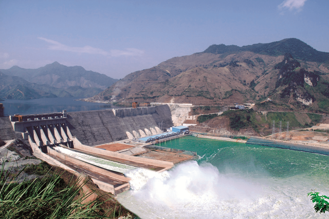

Xin chào,
Admin
Edit Profile
Logout
Tài nguyên nước
Trữ lượng
Tài nguyên nước mưa
Tài nguyên nước mặt
Tài nguyên nước dưới đất
Sử dụng
Xả thải
Cấp phép
Báo cáo
Số liệu KTTV
Văn bản
Bản đồ
Trợ giúp
GIỚI THIỆU
Xây dựng hệ thống quản lý, giám sát, khai thác sử dụng về Tài nguyên nước của tỉnh Sơn La đảm bảo lưu trữ một cách hệ thống, đầy đủ, dễ dàng tra cứu, sử dụng và cập nhật các thông tin về tài nguyên nước và liên quan phục vụ hiệu quả công tác quản lý nhà nước của địa phương, thúc đẩy quá trình phát triển kinh tế xã hội đất nước cũng như trên địa bàn tỉnh.
Thiết lập giải pháp công nghệ thông tin hiện đại, đảm bảo tương thích với hệ thống cơ sở dữ liệu của Bộ Tài nguyên và Môi trường, và phù hợp tối đa với điều kiện cơ sở hạ tầng kỹ thuật hiện có của Sở Tài nguyên và Môi trường Sơn La; nhằm đảm bảo: lưu trữ, cập nhật, truy xuất dễ dàng, có tính bảo mật cao; chi phí vận hành, bảo trì hợp lý; dễ dàng nâng cấp mở rộng khi cần thiết.
Tạo điều kiện thuận lợi cho các cơ quan, tổ chức, cá nhân có các hoạt động liên quan đến khai thác, sử dụng tài nguyên nước tiếp cận thông tin, khai thác hiệu quả và bền vững tài nguyên nước.

Nhà máy thủy điện Sơn La